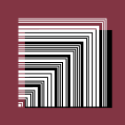
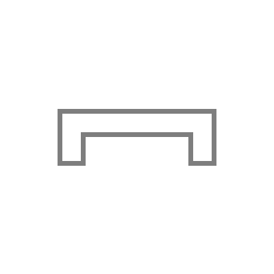

about
Иagi
2001年生まれ。2015年から音楽を作成開始。エレクトロニカやポップスを中心とした作品を制作している。
読みは「ナギ」。名前には「梛津椰凪」「nagi naduya」等の別表記もある。
✨🌟🌙🌟✨

Иagiの別名義。2017年から不定期に活動。より実験的な作品の制作を行う。
読みは「ルナ」。別表記に「LuИa」がある。
7^7

2020年に活動し始めた別名義。ミニマルなロックを制作する。
読みは「ななの しちじょう」。
冖園

2022年に活動し始めた別名義。ボーカルのみから成る曲を制作する。
読みは「べきぞの」。